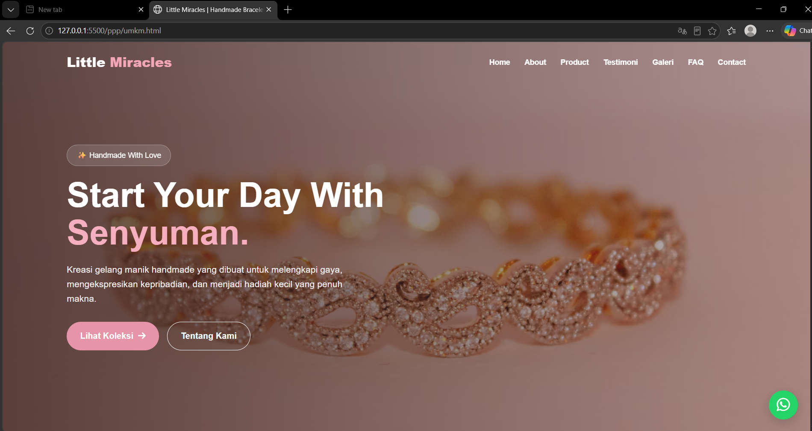
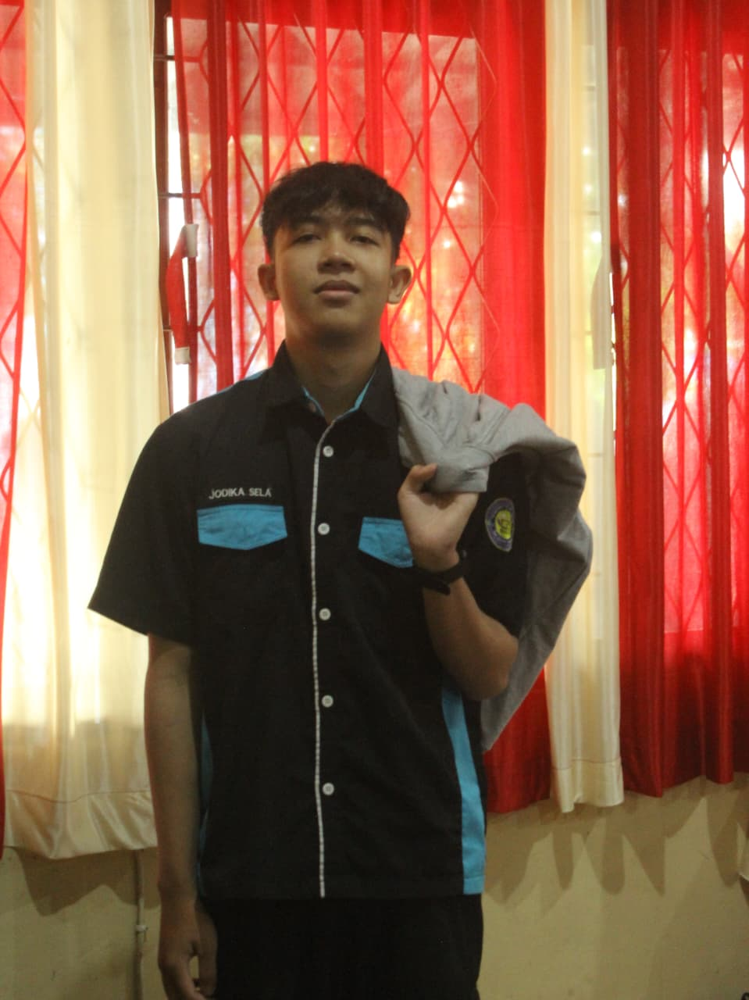
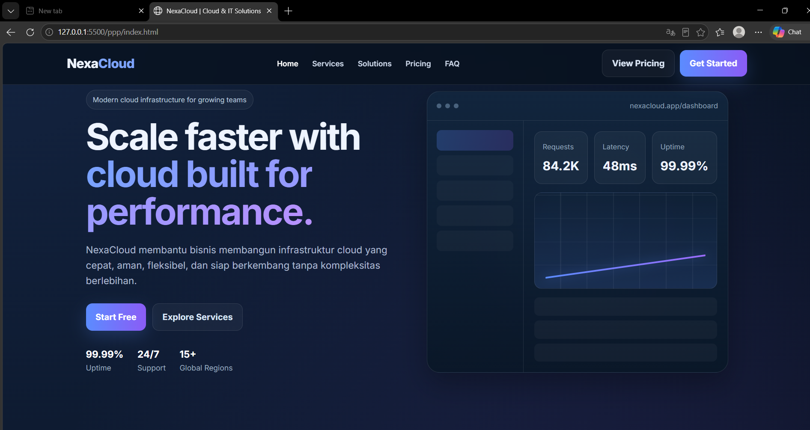
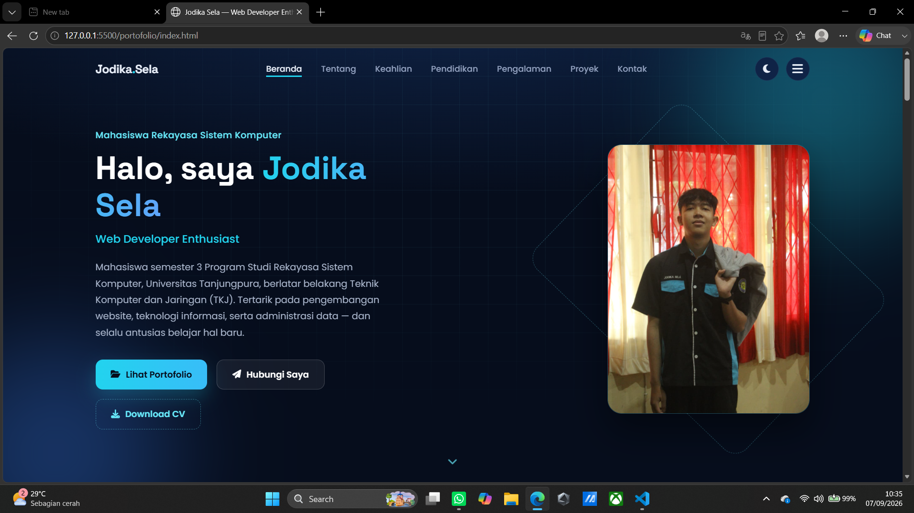
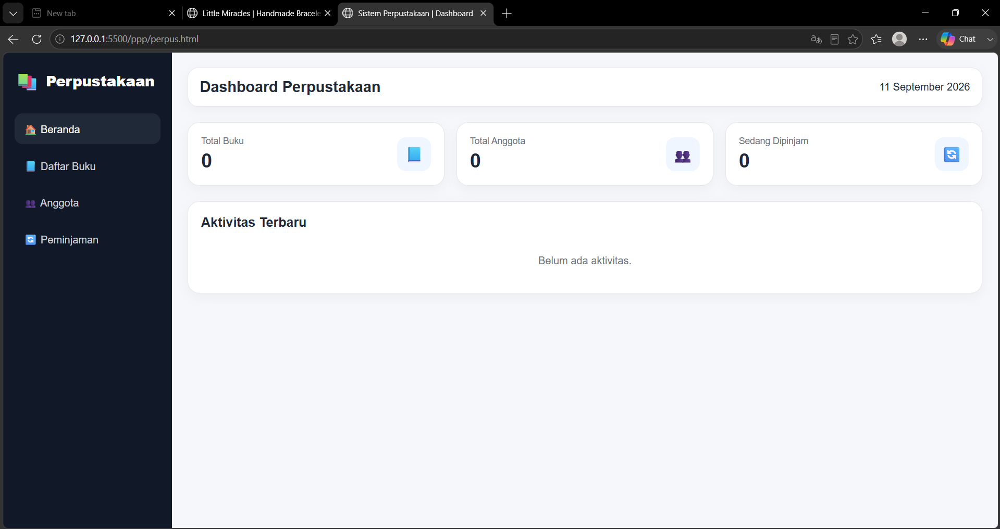

Website UMKM
Membangun website sederhana untuk mendukung promosi usaha mikro menggunakan HTML, CSS, dan JavaScript.
HTML
CSS
JavaScript
Mahasiswa Rekayasa Sistem Komputer
Web Developer Enthusiast
Mahasiswa semester 3 Program Studi Rekayasa Sistem Komputer, Universitas Tanjungpura, berlatar belakang Teknik Komputer dan Jaringan (TKJ). Tertarik pada pengembangan website, teknologi informasi, serta administrasi data — dan selalu antusias belajar hal baru.

Latar belakang, pengalaman, dan nilai yang saya bawa dalam bekerja.
Lulusan SMK Negeri 1 Ketapang jurusan Teknik Komputer dan Jaringan (TKJ) yang saat ini sedang menempuh pendidikan S1 Rekayasa Sistem Komputer di Universitas Tanjungpura.
Saya memiliki pengalaman magang di Diskominfo Ketapang dan Gamelab Indonesia yang membantu saya mengembangkan keterampilan teknis maupun kemampuan bekerja secara profesional.
Terbiasa menggunakan komputer dan Microsoft Word, serta memiliki pemahaman dasar mengenai HTML, CSS, JavaScript, dan jaringan komputer. Saya juga memiliki kemampuan komunikasi yang baik, mampu mengikuti instruksi dengan disiplin, serta mudah beradaptasi dengan lingkungan baru.
Kemampuan teknis dan non-teknis yang terus saya asah.
Perjalanan akademik yang membentuk kemampuan saya.
S1 Rekayasa Sistem Komputer — Semester 3 (Sedang Berlangsung)
Teknik Komputer dan Jaringan (TKJ)
Pengalaman magang dan praktik kerja yang telah saya jalani.
Beberapa proyek yang pernah saya kerjakan.

Membangun website sederhana untuk mendukung promosi usaha mikro menggunakan HTML, CSS, dan JavaScript.

Membuat landing page responsif dengan desain modern dan pengalaman pengguna yang baik.

Website portofolio pribadi untuk menampilkan profil, pengalaman, dan kemampuan.

Berbagai tugas dan proyek perkuliahan yang berkaitan dengan pengembangan website dan teknologi informasi.
Saat ini saya sedang mencari peluang kerja yang dapat dijalankan sambil menjalani perkuliahan. Saya terbuka untuk posisi Data Entry, Administrasi, Operator Komputer, IT Support, Web Developer Junior, maupun pekerjaan lain yang menerima mahasiswa aktif atau fresh graduate.
Saya berharap dapat terus mengembangkan kemampuan teknis dan profesional, sekaligus memberikan kontribusi positif bagi perusahaan atau organisasi tempat saya bekerja.
Terbuka untuk peluang kerja, kolaborasi, maupun sekadar bertukar sapa.